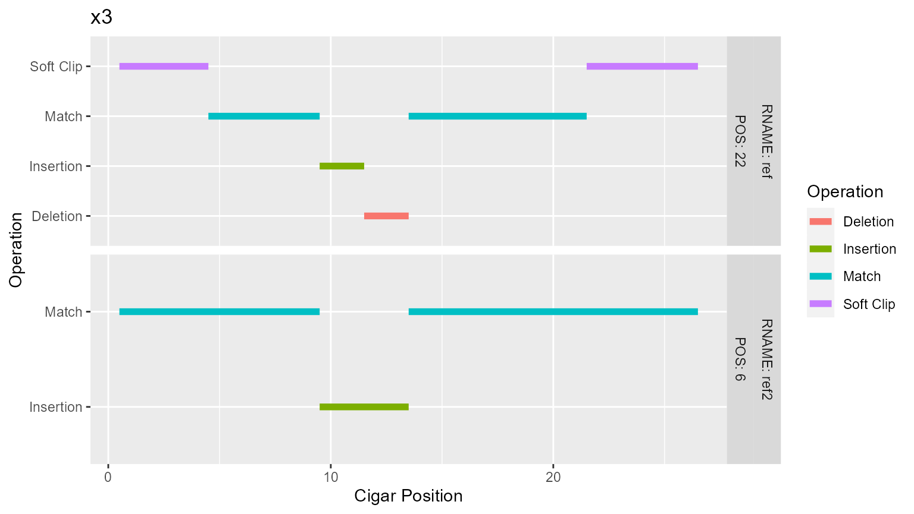

Read in SAM files as tibble
toy <- read_sam(system.file("extdata", "toy.sam", package = "utilitarian")) toy #> # A tibble: 13 x 11 #> QNAME FLAG RNAME POS MAPQ CIGAR RNEXT PNEXT TLEN SEQ QUAL #> <chr> <dbl> <chr> <dbl> <dbl> <chr> <chr> <dbl> <dbl> <chr> <chr> #> 1 r001 163 ref 7 30 8M4I4M1~ = 37 39 TTAGATAAA~ * #> 2 r002 0 ref 9 30 1S2I6M1~ * 0 0 AAAAGATAA~ * #> 3 r003 0 ref 9 30 5H6M * 0 0 AGCTAA * #> 4 r004 0 ref 16 30 6M14N1I~ * 0 0 ATAGCTCTC~ * #> 5 r003 16 ref 29 30 6H5M * 0 0 TAGGC * #> 6 r001 83 ref 37 30 5S9M6S = 7 -39 CAGCGCCAT * #> 7 x1 0 ref2 1 30 20M * 0 0 aggttttat~ ????????~ #> 8 x2 0 ref2 2 30 21M * 0 0 ggttttata~ ????????~ #> 9 x3 0 ref2 6 30 9M4I13M * 0 0 ttataaaac~ ????????~ #> 10 x4 0 ref2 10 30 25M * 0 0 CaaaTaatt~ ????????~ #> 11 x5 0 ref2 12 30 24M * 0 0 aaTaattaa~ ????????~ #> 12 x6 0 ref2 14 30 23M * 0 0 Taattaagt~ ????????~ #> 13 x3 0 ref 22 30 4S5M2I2~ * 0 0 ttataaaac~ ????????~
Create Tidy CIGAR Data
Results in a long table of tidy data showing start and end positions of the operations along with their English translations.
Due to the facetting of CIGAR visualizations on Reference names (RNAME) it is wise to group them together if the organism is what matters. For example in the case of the human genome vs sars coronavirus grouping all the human chromosomes together is useful.
sam %>%
mutate(RNAME = case_when(RNAME == "MN908947.3" ~ "hcov",
RNAME == "*" ~ "unmapped",
TRUE ~ "human")) %>%
tidy_cigar()
toy.tc <- tidy_cigar(toy) toy.tc #> # A tibble: 39 x 9 #> # Groups: QNAME, RNAME, POS [13] #> QNAME RNAME MAPQ POS POSstart POSend CIGARstart CIGARend Operation #> <chr> <chr> <dbl> <dbl> <dbl> <dbl> <dbl> <dbl> <chr> #> 1 r001 ref 30 7 8 15 1 8 Match #> 2 r001 ref 30 7 16 19 9 12 Insertion #> 3 r001 ref 30 7 20 23 13 16 Match #> 4 r001 ref 30 7 24 24 17 17 Deletion #> 5 r001 ref 30 7 25 27 18 20 Match #> 6 r001 ref 30 37 38 42 1 5 Soft Clip #> 7 r001 ref 30 37 43 51 6 14 Match #> 8 r001 ref 30 37 52 57 15 20 Soft Clip #> 9 r002 ref 30 9 10 10 1 1 Soft Clip #> 10 r002 ref 30 9 11 12 2 3 Insertion #> # ... with 29 more rows
Plot a CIGAR
Plotting a cigar from a single read in the tidied cigar table is done using plot_cigar() and specifying the read. Plots are facetted based on the references and the mapped position of the read. Returns a plot.
plot_cigar(toy.tc, "r002")

Plot all CIGARs
A wrapper around calling plot_cigar() on all the reads in the SAM file. Will warn and stop if more than 20 elements to be created, override this with the lg=TRUE argument.
p <- plot_all_cigars(toy.tc) toy[toy$QNAME == "r001", "CIGAR"] #> # A tibble: 2 x 1 #> CIGAR #> <chr> #> 1 8M4I4M1D3M #> 2 5S9M6S p[["r001"]]
toy[toy$QNAME == "x3", "CIGAR"] #> # A tibble: 2 x 1 #> CIGAR #> <chr> #> 1 9M4I13M #> 2 4S5M2I2D8M5S p[["x3"]]

Postscript
SAM headers contain useful information but for the purposes of cigar visualization they are ignored. Having access to them can be helpful so there is an included function to pull headers (as I couldn’t figure out a way to do so with readr).
Show Reference Lengths
h <- read_sam_headers(system.file("extdata", "toy.sam", package = "utilitarian")) h$References #> # A tibble: 2 x 2 #> Name Length #> <chr> <chr> #> 1 ref 45 #> 2 ref2 40